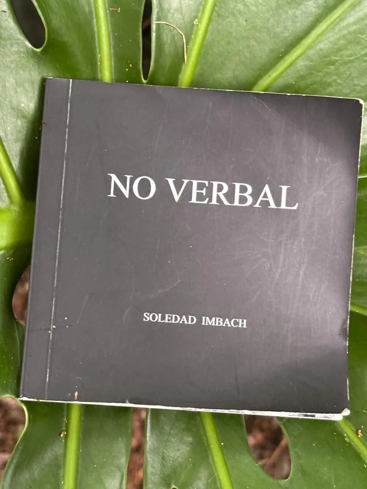

No Verbal
No Verbal es mi primer libro de fotografía, publicado de manera independiente en 2016, en una edición limitada de 20 ejemplares. Un ensayo visual que nace de la necesidad de cuestionar la heteronorma, los mandatos sobre los cuerpos y las formas en que la sociedad construye, disciplina y regula nuestras identidades y nuestros deseos.
A través de la fotografía propongo una mirada crítica sobre aquello que se presenta como natural, pero que es profundamente político: los géneros, los vínculos, la sexualidad y las maneras legítimas de habitar el mundo.
No Verbal es también una búsqueda personal, una forma de desobediencia visual frente a los discursos que pretenden definir qué cuerpos pueden mostrarse, cómo deben comportarse y qué deseos merecen ser reconocidos.
Antes de encontrar las palabras, encontré las imágenes. Y entendí que fotografiar también podía ser una forma de insubordinación, porque ningún cuerpo debería necesitar permiso para existir.
Antes de encontrar las palabras, encontré las imágenes.

Libros
Seguir recorriendo